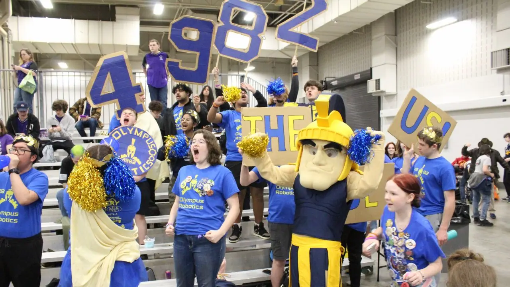
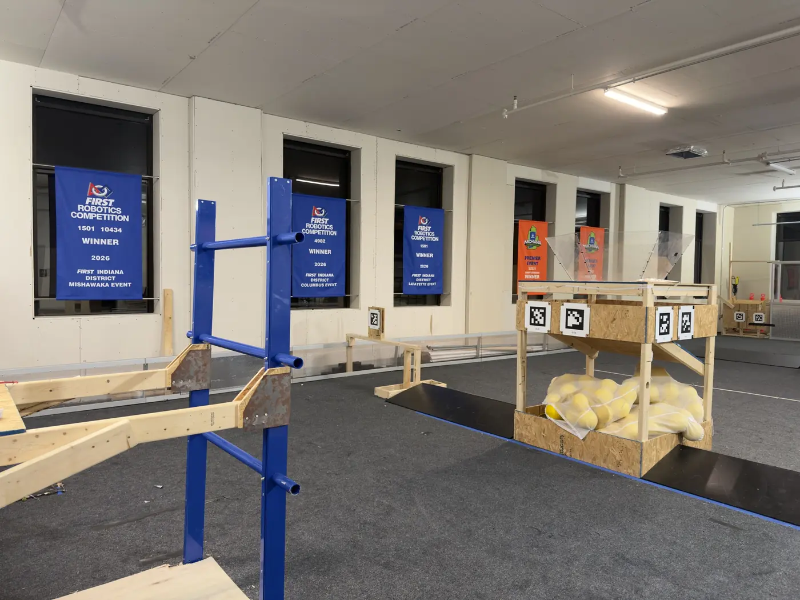
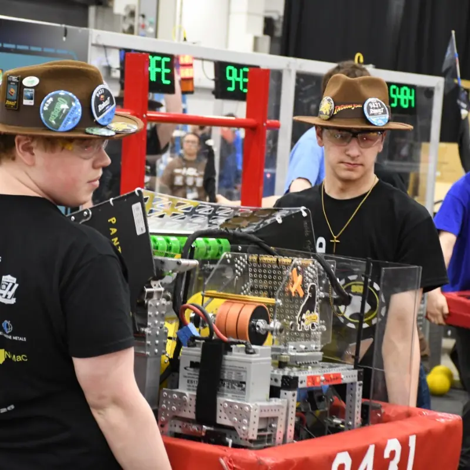
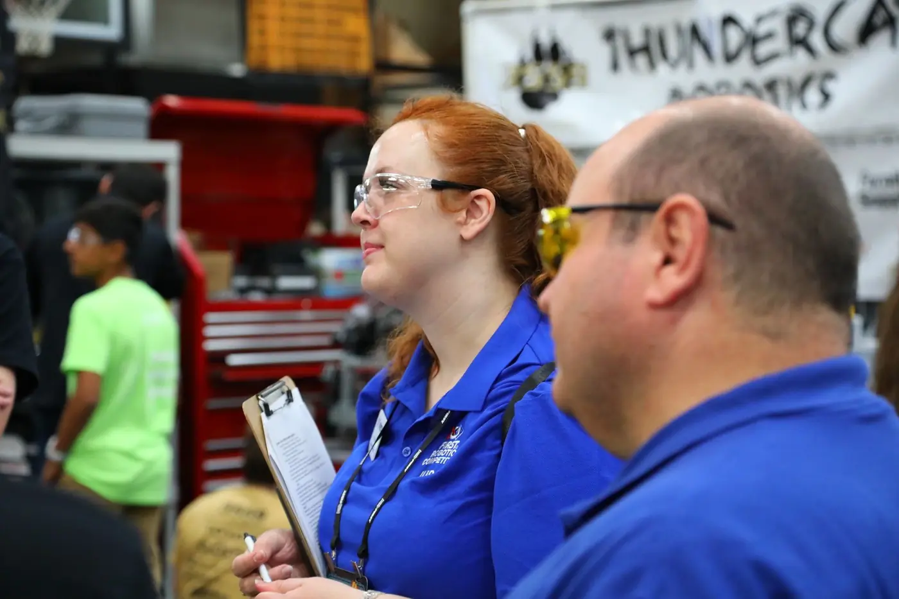

random()Canterbury High School · Fort Wayne
random()Canterbury High School · Fort Wayne88.9Best OPR, 2025–26
13/71Rank at Indiana events

Northeast Indiana high school robotics.
2026 FRC season · final
Final 2026 results · updated Oct 22, 2026
Every Northeast Indiana team in the FIRST Robotics Competition. Tap a team for its season, awards, closest game and coverage.
Open the 2026 EPA Top 10 display for a full-screen ranking, team spotlights, replay previews, and downloadable graphics.
District standings are the official order: teams earn FIRST Indiana district points for qualification wins, being picked for playoffs, playoff runs and awards. Points decide who advances to the state championship.
Power ranking sorts teams by their final 2026 Statbotics EPA (Expected Points Added): an estimate of how many points a robot adds to its alliance each match. Think of it like points per game.
Win-loss records count official matches only (district events, state and world championship). Matches are played in three-team alliances whose partners change every match, so a record reflects the team and its partners.
 Team THRUST · 1501Huntington · Huntington North High School / Huntington County 4-H45-15W-L#6250 points118.7EPA2× event winnerWorld ChampionshipImagery AwardInnovation in Control Award+1 more
Team THRUST · 1501Huntington · Huntington North High School / Huntington County 4-H45-15W-L#6250 points118.7EPA2× event winnerWorld ChampionshipImagery AwardInnovation in Control Award+1 more Olympus Robotics · 4982Fort Wayne · Homestead High School24-25W-L#21136 points58.8EPAEvent winnerState qualifier
Olympus Robotics · 4982Fort Wayne · Homestead High School24-25W-L#21136 points58.8EPAEvent winnerState qualifier Iron Legends · 9119Fort Wayne · North Side High School21-21W-L#3289 points75.1EPAState qualifierRising All-Star Award
Iron Legends · 9119Fort Wayne · North Side High School21-21W-L#3289 points75.1EPAState qualifierRising All-Star Award Apex Archers · 10172Fort Wayne · South Side High School7-17W-L#5528 points21.1EPARising All-Star Award
Apex Archers · 10172Fort Wayne · South Side High School7-17W-L#5528 points21.1EPARising All-Star Award Knight Robotics · 8103Kendallville · East Noble High School10-17W-L#5723 points35.1EPA
Knight Robotics · 8103Kendallville · East Noble High School10-17W-L#5723 points35.1EPA Robo-Knights · 8431Kendallville · East Noble High School9-15W-L#6020 points17.2EPAFIRST Leadership Award semifinalist
Robo-Knights · 8431Kendallville · East Noble High School9-15W-L#6020 points17.2EPAFIRST Leadership Award semifinalist Argyll Attack · 8742Fairmount · Madison-Grant Jr./Sr. High School9-16W-L#6119 points29.5EPA
Argyll Attack · 8742Fairmount · Madison-Grant Jr./Sr. High School9-16W-L#6119 points29.5EPARecords, events and awards: The Blue Alliance, captured Oct 22, 2026. Ratings: Statbotics EPA, final 2026 values (June 12, 2026 snapshot). District rank is among 68 Indiana teams.
The 2026 game
FIRST reveals a new game every January. In 2026 it was REBUILT: two of three robots score “fuel” into their hub, then climb the tower before time runs out.
Robots run on their own code, with no drivers. They score fuel into their alliance’s hub, and some climb the tower for extra points.
Students take the controls for 2 minutes 20 seconds. Fuel comes from the human player, the depot, or the middle of the field.
Based on how autonomous went, the two hubs switch between active and inactive. While your hub is off, you collect fuel or play defense.
As time runs out, both hubs open up and robots climb the tower for points and ranking bonuses. The alliance with the most points wins.
Game description from FIRST’s official REBUILT game overview. The 2027 game will be revealed on January 9, 2027.
Storylines
Won the Mishawaka and Lafayette district events, then reached the World Championship (Archimedes).
1×Won the Columbus district event.
1×Won the Mishawaka district event in just its second season.
WorldsEarned a trip to the World Championship (Daly) in Houston.





FIRST Tech Challenge
FTC uses smaller robots and a separate game. Its ratings (OPR) aren’t comparable to FRC’s EPA.
random()Canterbury High School · Fort Wayne MG (Microchips & Guac)Madison-Grant Jr./Sr. High School · Fairmount
MG (Microchips & Guac)Madison-Grant Jr./Sr. High School · FairmountRookie team for 2026–27. First matches this season.
2026–27 season
Every Indiana FTC and FRC event this season, plus the World Championship in Houston.
Oct 23–24, 2026 · Tippecanoe County Fairgrounds · Lafayette, IN
Fall offseason event: last season's robots, new drivers, and an early look at 2027.
Entry list not posted yet. Region teams will be listed here when it is.
Oct 31, 2026 · Wayne High School · Fort Wayne, IN
The REFINERY's Halloween offseason event. Matches 8:15 a.m.–6 p.m. ET; college and career fair 10 a.m.–2 p.m. Free spectator admission; costumes encouraged.
Entry list not posted yet. Region teams will be listed here when it is.
Dec 5, 2026 · Westfield Middle School · Westfield, IN
Qualifying tournament. Top teams and award winners earn spots at the Indiana FTC State Championship.
Entry list not posted yet. Region teams will be listed here when it is.
Dec 6, 2026 · Westfield Middle School · Westfield, IN
Qualifying tournament. Top teams and award winners earn spots at the Indiana FTC State Championship.
Entry list not posted yet. Region teams will be listed here when it is.
Jan 9, 2027 · Worldwide broadcast
FIRST reveals the 2027 game at noon ET. Teams start designing and building.
Feb 6, 2027 · Greenwood Middle School · Greenwood, IN
Qualifying tournament. Top teams and award winners earn spots at the Indiana FTC State Championship.
Entry list not posted yet. Region teams will be listed here when it is.
Feb 13, 2027 · Shoals Jr/Sr High School · Shoals, IN
Qualifying tournament. Top teams and award winners earn spots at the Indiana FTC State Championship.
Entry list not posted yet. Region teams will be listed here when it is.
Feb 20, 2027 · Scrimmages nationwide
Unofficial practice events before the season counts. A local REFINERY scrimmage date has not been announced.
Feb 20, 2027 · Avon High School · Avon, IN
Qualifying tournament. Top teams and award winners earn spots at the Indiana FTC State Championship.
Entry list not posted yet. Region teams will be listed here when it is.
Feb 28, 2027 · Penn High School · Mishawaka, IN
Qualifying tournament. Top teams and award winners earn spots at the Indiana FTC State Championship.
Entry list not posted yet. Region teams will be listed here when it is.
Mar 6, 2027 · Nicoson Hall, University of Indianapolis · Indianapolis, IN
Indiana's FTC state championship and the path to Houston.
Teams qualify during the season. Region qualifiers will be listed here.
Mar 12–14, 2027 · Penn High School · Mishawaka, IN
The first Indiana district event of 2027. THRUST (1501) and CyBears (10434) won it together in 2026.
Entry list not posted yet. Region teams will be listed here when it is.
Mar 19–21, 2027 · Silver Creek Senior High School · Sellersburg, IN
Southern Indiana district event.
Entry list not posted yet. Region teams will be listed here when it is.
Mar 25–27, 2027 · Jefferson High School · Lafayette, IN
THRUST (1501) won Lafayette in 2026.
Entry list not posted yet. Region teams will be listed here when it is.
Apr 1–3, 2027 · Homestead High School · Fort Wayne, IN
Indiana district robotics comes to Fort Wayne. The home event for most teams on this page.
Entry list not posted yet. Region teams will be listed here when it is.
Apr 16–18, 2027 · Center Grove High School · Greenwood, IN
Indiana's top teams by district points meet for the state title and spots at the FIRST Championship.
Teams qualify during the season. Region qualifiers will be listed here.
Apr 28 – May 1, 2027 · George R. Brown Convention Center · Houston, TX
The world championship for FRC and FTC. Teams qualify through district, state and regional results.
Teams qualify during the season. Region qualifiers will be listed here.
New to robotics?
They’re two competition formats run by FIRST. FRC (FIRST Robotics Competition) is for grades 9–12 and uses industrial-size robots that can weigh more than 100 pounds. FTC (FIRST Tech Challenge) is for grades 7–12 with smaller robots. Each has its own game, season and championship. Schools choose a format; it isn’t assigned by enrollment like football classes.
Two alliances, red and blue, of three FRC teams each. In 2026 a match lasted 2 minutes 40 seconds: 20 seconds of autonomous, when robots run on code alone, then 2 minutes 20 seconds with student drivers. Partners change every qualifying match; then the top teams pick partners for the playoffs. See how the 2026 game worked.
A new game is revealed in January (FRC) or September (FTC). FRC teams build a robot in weeks, play district events in March and April, and the best advance to the Indiana State Championship and the FIRST Championship in Houston.
Expected Points Added, from Statbotics: the average points a robot is estimated to add to its alliance’s score. It’s a performance rating, like points per game, not a measure of everything a team does.
No. Awards like Impact, Engineering Inspiration, Judges’ and Rising All-Star recognize outreach, design, business plans and student leadership. Many students go on to engineering, software and manufacturing careers.
The next team could be yours
These schools within 60 miles of downtown Fort Wayne serve high school students but have no school-affiliated FTC or FRC team that we could find. We want to see them on this leaderboard. The REFINERY helps new teams with funding, parts, tools, practice space and mentors.
Fort Wayne Community Schools
Superintendent: Mark Daniel
Smith Academy for Excellence
Co-Founder and School Leader: Corey Smith
The Crossing - Fort Wayne
CEO & Superintendent: Ryan Hill
Independent school
Headmaster: Nathaniel Pullmann
Independent school
Head of School: Jacob Pennekamp
Independent school
Principal: Stephanie Underwood
Independent school
Founder & Director: Jill Haskins
Independent school
Principal: Jonathan Bellairs
Independent school
Superintendent of Catholic Schools: David Maugel
Independent school
Superintendent of Catholic Schools: David Maugel
Independent school
Principal: Barbara Black
Independent school
Principal: Faisal Ansari
Independent school
Principal: Abdulwahab Abashaar
Independent school
Principal: Kari Carr
Indiana Agriculture & Technology School - Fort Wayne
Executive Director: Keith Marsh
East Allen County Schools
Superintendent: Marilyn Hissong
Independent school
Head of Schools: Kevin Newbry
East Allen County Schools
Superintendent: Marilyn Hissong
Independent school
Assistant School Principal: Jonathan Lakie
East Allen County Schools
Superintendent: Marilyn Hissong
East Allen County Schools
Superintendent: Marilyn Hissong
East Allen County Schools
Superintendent: Marilyn Hissong
Independent school
Independent school
Principal: Joshua Burton
Smith-Green Community Schools
Superintendent: Paul Voigt
Independent school
Principal: Megan Horsley
Norwell Community Schools
Superintendent: Mike Springer
Lakewood Park Christian School
Head of School: Dr. Roy Andrews
Whitley County Con Schools
Superintendent: Dr. Trent Lehman
Garrett-Keyser-Butler Com Sch Corp
Superintendent: Daniel Durrwachter
Independent school
Head of School: Candice Holbrook
North Adams Community Schools
Superintendent: Kimberly Hiatt
Independent school
Head of School: Darren Kloepper
Independent school
Independent school
Antwerp Local
Superintendent: Dr. Martin Miller
DeKalb Co Ctl United Sch Dist
Superintendent: Steven Teders
Independent school
Principal: Brian Steffen
Independent school
Administrator: Beth Hauke
MSD Bluffton-Harrison
Superintendent: Bradley Yates
Adams Central Community Schools
Superintendent: Aaron McClure
Crestview Local
Superintendent: Matt Dubé
Hicksville Exempted Village School District
Superintendent: Aaron Hylander
DeKalb Co Eastern Com Sch Dist
Superintendent: Ryan Abbott
DeKalb Co Eastern Com Sch Dist
Superintendent: Ryan Abbott
Whitko Community School Corp
Superintendent: Amy Korus
Central Noble Com School Corp
Superintendent: Dr. Barry Younghans
Whitko Community School Corp
Superintendent: Amy Korus
DeKalb Co Eastern Com Sch Dist
Superintendent: Ryan Abbott
Wayne Trace Local
Superintendent: Paul Jones
Paulding Exempted Village
Superintendent: Chris Etzler
South Adams Schools
Superintendent: Joe Meyer
Independent school
Vantage Career Center
Superintendent: Rick Turner
Hamilton Community Schools
Superintendent: Dr. William Reichhart
Edgerton Local
Superintendent: Ben Wilhelm
West Noble School Corporation
Superintendent: Nathan Lowe
Southern Wells Com Schools
Superintendent: Matt Brankle
Manchester Community Schools
Interim Superintendent: Dr. Jeffrey Stephens
Independent school
Superintendent: Joe Elrod
Lincolnview Local
Superintendent (CEO): Jeffrey T. Snyder
Parkway Local
Superintendent: Laura Young
MSD Wabash County Schools
Superintendent: Christopher Kuhn
Edon Northwest Local
Superintendent: Anthony Stevens
Prairie Heights Community Sch Corp
Superintendent: Jeff Reed
MSD Steuben County
Superintendent: Dr. Matt Widenhoefer
Warsaw Community Schools
Superintendent: David Hoffert
Bryan City
Superintendent: Mark Rairigh
Wawasee Community School Corp
Superintendent: Kent Myers
Heartland Career Center
Director: Floyd McWhirt
Wabash City Schools
Superintendent: Dr. Christopher E. Daughtry
MSD Wabash County Schools
Superintendent: Christopher Kuhn
MSD Wabash County Schools
Superintendent: Christopher Kuhn
MSD Wabash County Schools
Superintendent: Christopher Kuhn
Independent school
Pastor/Administrator: Todd Williams
Eastbrook Community Sch Corp
Superintendent: Patrick McLaughlin
Lakeland School Corporation
Superintendent: Traci Blaize
Ottoville Local
Superintendent: Jarrod Wehri
Defiance City
Superintendent: Robert Morton
Westview School Corporation
Superintendent: Dr. Jaime Carroll
Blackford County Schools
Superintendent of Schools: Chad Yencer
Delphos City
Superintendent: Jeff Hobbs
Montpelier Exempted Village
Superintendent: Travis Lichty
Fairfield Community Schools
Superintendent: Carrie Cannon
Independent school
Principal: Jerry Nichols
Independent school
Head of School: Nathan Stant
Jennings Local
Superintendent: Nicholas Langhals
Jay School Corporation
Superintendent: Jeremy Gulley
Continental Local
Superintendent: Tim Eding
Independent school
Fremont Community Schools
Superintendent/CFO: Dr. William Stitt
Northeastern Local
Superintendent: Nicole Wells
Marion Community Schools
Superintendent: Dr. Stephanie Lockwood
Marion Community Schools
Superintendent: Dr. Stephanie Lockwood
Tippecanoe Valley School Corp
Superintendent: Blaine Conley
Independent school
Principal: Roger Younce
Independent school
Co-Head Administrators: Michele Vigil and Gail Schrock
Stryker Local
Superintendent: Nate Johnson
Independent school
Head of School: Tim Lehman
Spencerville Local
Superintendent: Brian Woods
Independent school
Principal: Bruce Stuard
Celina City
Superintendent: Brooke Gessler
Kalida Local
Superintendent: Dean Brinkman
Goshen Community Schools
Superintendent: Jim DuBois
Oak Hill United School Corp
Superintendent: Sheri Hardman
Millcreek-West Unity Local
Superintendent: Steven Riley
Goshen Community Schools
Superintendent: Jim DuBois
Fort Recovery Local
Superintendent: Tony Stahl
Middlebury Community Schools
Superintendent: Dr. Jayson Snyder
Independent school
North Central Local
Superintendent: Michael Bute
Wa-Nee Community Schools
Superintendent: Scot Croner
Archbold-Area Local
Superintendent: Jayson Selgo
Miller City-New Cleveland Local
Superintendent: Kerry Johnson
Triton School Corporation
Superintendent: Jeremy Riffle
St Henry Consolidated Local
Superintendent: Adam Puthoff
Elida Local
Superintendent: Joel Mengerink
Independent school
Principal: Dave Yoder
Independent school
Peru Community Schools
Superintendent: Trent McCormick
The Crossing - Goshen
CEO & Superintendent: Ryan Hill
Peru Community Schools
Superintendent: Trent McCormick
Holgate Local
Superintendent: Jessica Schuette
Independent school
School Superintendent: Keith Hamblen
Reading Community Schools
Superintendent: Mel Rentschler
Concord Community Schools
Superintendent: Daniel Funston
Independent school
Principal: Rapp Crook
White Pigeon Community Schools
Superintendent: Shelly McBride
Pettisville Local
Superintendent: Josh Clark
Maconaquah School Corp
Superintendent: Craig Jernagan
Independent school
Head of School: Stephanie Williams
Independent school
Ottawa-Glandorf Local
Superintendent: Don Horstman
Independent school
Superintendent: Bruce Bowman
Shawnee Local
Superintendent: Don Diglia
Columbus Grove Local
Superintendent: Brian Best
Marion Local
Superintendent: Mike Pohlman
Apollo
Superintendent: Keith Horner
Wes-Del Community Schools
Superintendent: Andy Stover
Bremen Public Schools
Corporation Superintendent: Hope Amor
West Central Learning Academy II
Superintendent: Mindy Schulz
Independent school
Fayette Local
Superintendent: Angela Belcher
Independent school
Principal: Stephanie Burley
Independent school
School Director: Karis Thines
Constantine Public School District
Superintendent: Patrick Breen
Constantine Public School District
Superintendent: Patrick Breen
Argos Community Schools
Superintendent: Kerry Johnson
New Knoxville Local
Superintendent: Mark Platfoot
St. Joseph County ISD
Superintendent: James Berry
Elkhart Community Schools
Superintendent of Schools: Michele A. Riise
Independent school
Administrator: Cheryl Lawrence-Jones
Leipsic Local
Superintendent: Keith Baumgartner
For reporters
Everything you need to cover a team: quick facts, data, photos, sources and who to call.
The REFINERY, a nonprofit robotics makerspace in Fort Wayne, built and maintains this page. The REFINERY and its affiliate BioNanomics are listed sponsors of FRC teams 4982 (Homestead), 8742 (Madison-Grant), 10172 (South Side), 10332 (Carroll) and 10434 (Northrop) and FTC team 22331 (Canterbury). Doug Horner of The REFINERY is a listed sponsor of 9431 (Snider), and FTC rookie team 36124 is based at The REFINERY. Sponsorships come from each team’s public listing on The Blue Alliance and FTCScout. Standings, records and ratings are taken as published by The Blue Alliance, Statbotics and FTCScout; no ranking is adjusted by hand.
Team pages list people only with the exact role and date found in a public source. Rosters change every season; confirm current captains and coaches with the team before publishing.